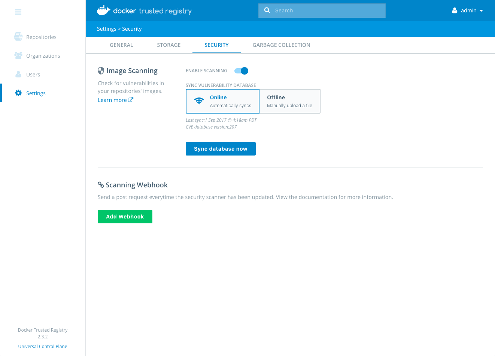
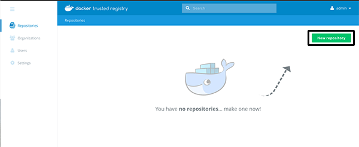
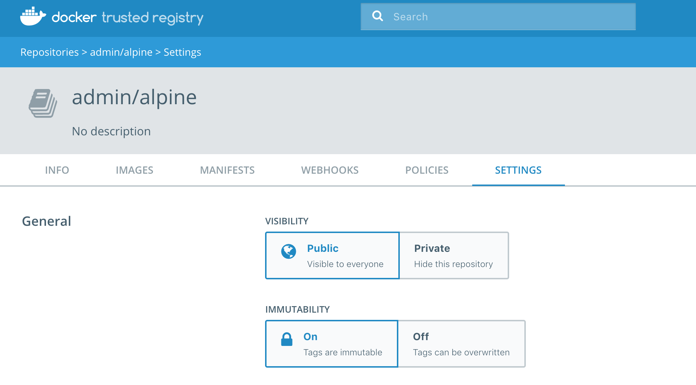
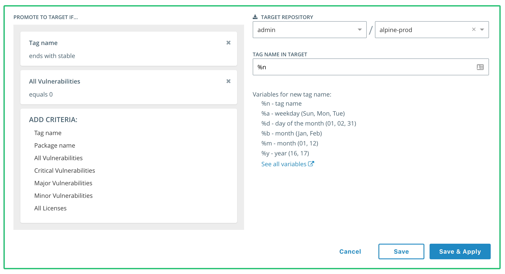
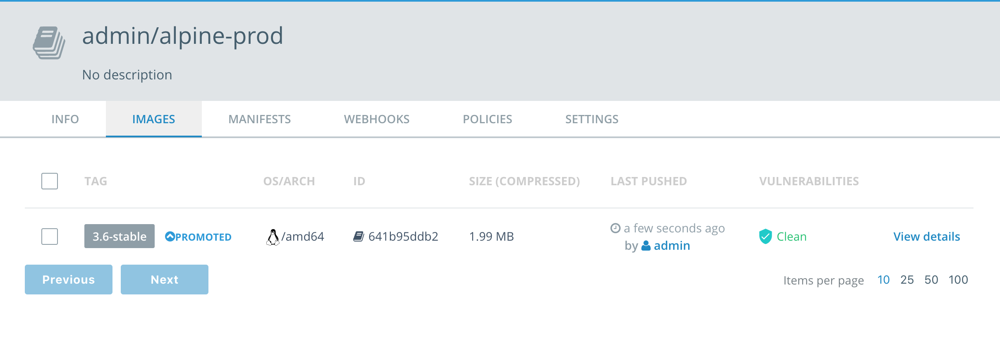

Docker Trusted Registry Deep Dive
In this lab we will explore Docker Trusted Registry, an on-premises Docker Registry that has many advanced features for enterprise workloads. These include; image scanning, immutable repos, and image promotion. The focus of this lab is to get our hands dirty and explore these advanced features.
Difficulty: Intermediate
Time: Approximately 35 minutes
Tasks:
Prerequisites
The environment for this lab is provided by Play With Docker.
You should familiarize yourself with the conventions used in this document, and your Play With Docker lab before continuing.
Document conventions
-
When you encounter a phrase in between
<and>you are meant to substitute a value from your environment.For example, if you see
<dtr domain>you should substitute with the value of the DTR domain in your lab. This will be something likeip172-18-0-7-b70lttfic4qg008cvm90.direct.microsoft.play-with-docker.com.
Understanding the Play With Docker Interface
Accessing PWD
- Open the following link in a new tab or window: PWD environment sign-in page
Note: You might want to right click the above link and open it in a new tab or window
-
Fill out the form, and click
submit. You will then be redirected to the PWD environment. -
Click
AccessIt will take a few minutes to provision out your PWD environment.
Understanding the Lab’s Play With Docker Interface

There are three main components to the Play With Docker (PWD) interface.
1. Console Access
Play with Docker provides access to the three Docker EE hosts in your Cluster. These are:
- A Linux-based Docker EE 17.06 Manager node
- A Linux-based Docker EE 17.06 Worker node
- A Windows Server 2016-based Docker EE 17.06 Worker Node
By clicking a name on the left, the console window will be connected to that node.
2. Access to your Universal Control Plane (UCP) and Docker Trusted Registry (DTR) server
The PWD interface provides you one-click access to the Universal Control Plane (UCP) web-based management interface as well as the Docker Trusted Registry (DTR) web-based management interface. Clicking the UCP or DTR buttons in the left pane will bring up the respective server web interface in a new browser tab.
3. Session Information
Throughout the lab you will be asked to provide either hosntnames or login credentials that are unique to your environment. These are displayed for you at the bottom of the PWD screen.
Task #1 - Workflow Overview
Docker Trusted Registry (DTR) is the enterprise-grade image storage solution from Docker. You install it behind your firewall either in your private cloud or your data center so that you can securely store and manage the Docker images you use in your applications.
DTR has a web-based user interface that allows authorized users in your organization to browse and manage Docker images. It provides information about who pushed what image at what time. It even allows you to see what Dockerfile lines were used to produce the image and, if security scanning is enabled, to see a list of all of the software installed in your images as well as known vulnerabilities.
Behind the scenes, Docker Trusted Registry (DTR) is a containerized application that runs on a Docker Universal Control Plane cluster. Once you have DTR deployed, you use your Docker CLI client to login, push, and pull images.
Let’s get started.
To make our life a bit easier, let’s set an environment variable to hold the name of our DTR server.
-
In PWD scroll to the bottom of the screen and copy the DTR Hostname onto your clipboard.
-
In PWD click
Manager1. -
Use the following command to set the
DTRenvironment variable. Remember to substitute the value inside of the<>with the value you copied to your clipboard in a previous step.export DTR=<dtr hostname> -
Verify that’s set properly by echoing it back out to the console.
echo $DTR -
Use the
docker logincommand to log-in to DTR. Your username and password can be found at the bottom of the main PWD screen.docker login $DTR Username: <username> Password: <password> Login Succeeded
Contratulations, you are now logged in to you DTR instance. In the next steps we’ll explore Image Scanning, Immutable Repos, and Image Promotion.
Task #2 - Image Scanning
Docker Trusted Registry has a built in security scanner that can be used to discover what versions of software are used in your images. It scans each layer and aggregates the results to give you a complete picture of what you are shipping as a part of your stack. Most importantly, it correlates this information with a vulnerability database that is kept up to date through periodic updates. This gives you unprecedented insight into your exposure to known security threats.
Image Scanning is not enabled by default. The next few steps will show you how to enable it.
-
In PWD click the DTR button on the left and log in to DTR with the credentials found at the bottom of the PWD screen.
Note: You may get a browser security warning, this is because we’re using self-signed certificates. It’s safe to proceed.
The following steps should be completed in your DTR web interface.
-
Click on “Settings” on the left-hand navigation menu.
-
Select the “Security” tab.
You should see that “Enable Scanning” option is currently turned off.
-
Click the
ENABLE SCANNINGslider.
Docker Trusted Registry supports two modes to synchronize the scanning database: online and offline. Offline can be useful if you have an air-gapped environment where you need to manually upload the vulnerability database without having the Registry connected to the internet.
-
Click
Enable.
You will get a note that the vulnerability database is updating.
While the database is updating let’s create a new repository and push some images to it.
The following steps should be completed in your DTR web interface.
-
From the left menu click
Repositories. -
From the main DTR page click
New Repository. This brings up the new repository dialog.
-
Under
REPOSITORY NAMEtypealpine. -
Enable
SCAN ON PUSHby clicking the slider. This will tell DTR to scan every new image that is pushed. -
Click
Save.
Now that we have a repository we can push images to it.
In the real world you will normally be pushing your own application images to your DTR. To make this lab simpler, we’ll push some pre-built images.
-
In PWD click
Manager1and move into the console on the right. -
Use the following command to pull version
3.5of the official Alpine image.docker image pull alpine:3.5 -
Retag the image so we can push it to our newly created DTR repository.
Adding the name of your DTR host (via our environment variable), the user, and the repository name to the beginning of the tag makes pushing it to our DTR repository possible. The format of the
docker image tagcommand is:docker image tag <original-tag> <new-tag>.docker image tag alpine:3.5 $DTR/admin/alpine:3.5 -
Push the newly tagged image.
docker image push $DTR/admin/alpine:3.5
Now that the image has been pushed to our DTR server, let’s see what the security scanner finds.
Note: It may take a minute or two for the security scan to complete.
-
Move back to your DTR server web interface.
-
Click
Repositoriesfrom the left-hand navigation menu. -
Click
View Detailsfor the Alpine repository. -
Click
Images.Notice how easy it is to see the security scan has found issues. Let’s drill down a bit.
-
Select “View Details” to the right of the image.
The default view will show scan results based on the layers in your Docker image. This can be useful to see at what step a vulnerability was introduced into your image.
-
Clicking on a vulnerable component will bring up more detailed information.
-
Clicking on any of the CVE entries under
Vulnerabilitieswill open a new browser tab and take you to details on that particular item.
Now that we know the Alpine 3.5 image has vulnerabilities, let’s check out Alpine 3.6.
-
In PWD click
Manager1and move into the console on the right. -
Use the following command to pull version
3.6of the official Alpine image.docker image pull alpine:3.6 -
Retag the image so we can push it to our DTR server by adding the name of the DTR host (via our environment variable), the user, and the repository name with the 3.6 tag.
docker image tag alpine:3.6 $DTR/admin/alpine:3.6 -
Push the newly tagged image to DTR.
docker push $DTR/admin/alpine:3.6 -
Go back to DTR, navigate to the Alpine Repository and view it’s details. You’ll notice that the Alpine 3.6 image registers as “Clean”
Now that you have a clean version of your image, the last thing you want is for someone to overwrite it with another version that may include vulnerabilities.
Thankfully, Docker EE includes support for immutable repos. We’ll look at them next.
Task #3 - Immutable Repos
By default, users with access to push to a repository can push the same tag multiple times to the same repository. As an example, a user pushes an image to library/wordpress:latest, and later another user can push a different image with exactly the same name. This can make it difficult to trace back the image to the build that generated it.
To prevent this from happening you can configure a repository to be immutable. Once you push an image to an immutable repo, DTR won’t allow that tag to be overwritten. Thus, preventing the problem where we have an image with the same name, but the underlining code is different.
Let’s make our DTR repo immutable.
-
In the DTR web UI, navigate to the repository settings page, and change immutability to on and click Save.

From now on, users will get an error message when trying to push a tag that already exists:
-
Move back to the
Manager1console window in PWD, and try to re-push the Alpine 3.6 image.docker push $DTR/admin/alpine.3.6 The push refers to a repository [ip172-18-0-5-b7d9nefvjdpg00auoga0.direct.microsoft.play-with-docker.com/admin/alpine] 5bef08742407: Layer already exists unknown: tag=3.6 cannot be overwritten because admin/alpine is an immutable repository
Task #4 - Image Promotion
As a developer, once you’ve made changes to your application you want to make it available to your users. To do this you typically push an image to DTR, or have a CI/CD pipeline that does it for you. A team responsible for QA will notice you’ve pushed a new image, run tests, and if the image is working as expected, they’ll promote it to production. But, this is all very manual.
As an example, you push the image to example/my-app:3.6-stable, the QA team will pull and test it, and push it as example/myapp-prod:3.6-stable.
DTR allows you to automate this. If the image you pushed to DTR meets certain criteria, like it has a specific name, and doesn’t have any vulnerabilities, the image is automatically promoted. You can build complex deployment pipelines by combining multiple promotion criteria and chaining promotion rules.
In this example, we’ll create two new repositories - admin/alpine-dev and admin/alpine-prod. We’ll create a promotion policy in the admin/alpine-dev repository that automatically promotes images that meet the criteria of the policy. And we’ll see it in action.
Perform the following steps from your DTR web interface.
-
From the left menu click
Repositories. -
From the main DTR page click
New Repository. This brings up the new repository dialog. -
Under
REPOSITORY NAMEtypealpine-dev. -
Enable
SCAN ON PUSHby clicking the slider. This will tell DTR to scan every new image. -
Click
Save. -
Repeat steps 1-5, but for Step 3 use
alpine-prodas theREPOSITORY NAME.
Let’s create a promotion policy in the admin/alpine-dev repository.
-
Select the
alpine-devrepository. -
Go to the
POLICIEStab. -
Click
New promotion policybutton. -
We’ll want to make sure the image we promote has a tag that ends in
stableand has no vulnerabilities. Fill in the form so it matches the image below.
-
Click
Save & Apply.
Everything is set up. This means that new images pushed to the admin/alpine-dev repository, that end with stable and have no known vulnerabilities, will be automatically promoted to the admin/alpine-prod repository.
To simulate how this will work let’s retag and push a couple of images.
-
In PWD move into the
Manager1console. -
Retag the Alpine 3.5 and 3.6 images as follows:
docker image tag alpine:3.5 $DTR/admin/alpine-dev:3.5-stableAnd
docker image tag alpine:3.6 $DTR/admin/alpine-dev:3.6-stable -
Push both of the newly tagged images to the DTR server.
docker image push $DTR/admin/alpine-dev:3.5-stableAnd
docker image push $DTR/admin/alpine-dev:3.6-stable
Both of the images are tagged as stable, but we know from the previous exercise that the 3.5 version has a security vulnerability. This means that only the 3.6 image should have met the criteria of the promotion policy.
Go back to DTR and verify that only the 3.6 image has been promoted into the alpine-prod repo. The 3.5 tag has not.
-
Switch back to the DTR web interface.
-
From the left hand menu click
Repositories. -
Select the
alpine-prodrepository. -
Click on
images.
You can create several promotion policies per repository, chain promotion policies across different repositories, and use promotion policies with webhooks. This allows you to create flexible deployment pipelines.
Survey
We’re grateful you’ve chosen to spend some time with us today. We’d appreciate the opportunity to hear from you about what you liked and what we might improve.
If you could please fill out this very short survey, it’d be greatly appreciated.
Thanks, the DockerCon Hands-on Labs team.
Conclusion
In this lab we’ve looked how Docker EE, and Docker Trusted Registry more specifically, can help you secure your Docker images.
There are several other Docker EE labs available, so be sure to check those out.
You can find more information on Docker EE at http://www.docker.com as well as continue exploring using our hosted trial at https://dockertrial.com